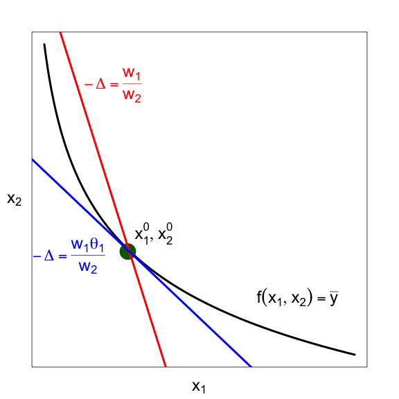
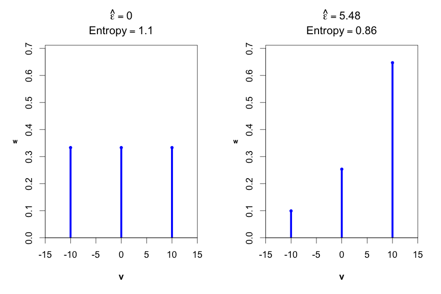
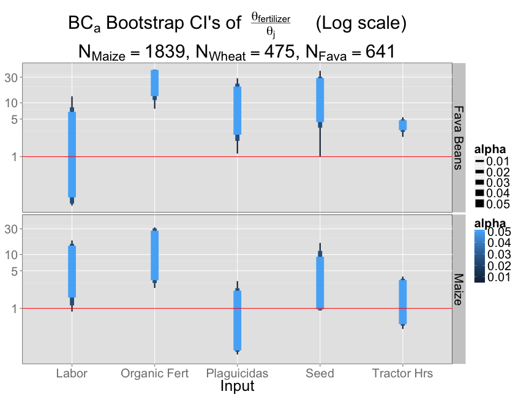

Reveal.js
HTML PRESENTATIONS MADE EASY
Created by Hakim El Hattab / @hakimel
Heads Up
reveal.js is a framework for easily creating beautiful presentations using HTML. You'll need a browser with support for CSS 3D transforms to see it in its full glory.
Slide 1
Slide 2
Vertical Slides
Slides can be nested inside of other slides, try pressing down

Basement Level 1
Press down or up to navigate.
Basement Level 2
Cornify

Basement Level 3
That's it, time to go back up.

Vertical Slides
Slides can be nested inside of other slides, try pressing
Basement Level 1
Press down or up to navigate.
Point of View
Press ESC to enter the slide overview. Hold down alt and click on any element to zoom in on it using zoom.js. Alt + click anywhere to zoom back out.
RVL.IO
If you don't like writing slides in HTML you can use the online editor rvl.io.
Works in Mobile Safari
Try it out! You can swipe through the slides and pinch your way to the overview.
Marvolous Unordered List
- No order here
- Or here
- Or here
- Or here
Marvolous Unordered List
- No order here
- Or here
- Or here
- Or here
Marvolous Unordered List
- No order here
- Or here
- Or here
- Or here
Marvolous Unordered List
- No order here
- Or here
- Or here
- Or here
“Reduced Form” Determinants of Fertilizer Use:
Double Hurdle Model
Data
\[\vphantom{}\]
2001 government survey
General household survey with an agriculture module
1748 farmers in sample
29% of them purchased any fertilizer
| Variable | Point estimate | Lower 95% CI | Upper 95% CI | |
| Indigenous proportion | -0.073 | -0.141 | -0.021 | * * |
| Indigenous practices | 0.009 | -0.011 | 0.032 | |
| HHH age | -0.001 | -0.002 | 0.0004 | |
| Remittances from Bolivia | -0.016 | -0.052 | 0.001 | . |
| Remittances from abroad | -0.008 | -0.047 | 0.021 | |
| Drive time to town | 0.002 | -0.004 | 0.014 | |
| Drive time to city | 0.001 | -0.005 | 0.005 | |
| Mean annual rainfall | 0.017 | -0.030 | 0.057 | |
| Elevation (km) | 0.063 | 0.040 | 0.088 | * * * |
| Soil avail H20 capacity index | -0.025 | -0.058 | 0.005 | . |
| Total exchangeable bases | 0.018 | 0.007 | 0.033 | * * * |
| Calcium carbonate | 0.062 | -0.061 | 0.225 | |
| Calcium sulfate | -5.426 | -10.520 | -2.045 | * * * |
| Topsoil Sodicity | -0.077 | -0.184 | -0.003 | * |
| Topsoil Salinity | 1.861 | 0.489 | 3.490 | * * |
| Gravel percentage | 0.006 | 0.002 | 0.010 | * * |
| Silt percentage | 0.001 | -0.001 | 0.002 | |
| Clay percentage | -0.005 | -0.010 | 0.001 | |
| HHH no education | -0.020 | -0.078 | 0.099 | |
| HHH secondary edu | 0.034 | -0.012 | 0.079 | |
| HHH tertiary edu | 0.235 | -0.034 | 0.468 | . |
| HHH female | -0.040 | -0.078 | 0.039 | |
| Received credit | 0.123 | 0.041 | 0.226 | * * |
| HHH illiterate | -0.023 | -0.098 | 0.051 | |
| Signif codes: *** = 0.1%; ** = 1%; * = 5%; . = 10%. Reference level for Education: Primary. Region variables omitted but are economically and statistically significant. Indigenous proportion X Education interaction included in underlying specification | ||||
| Mean | Median | Std dev | Min | Max | |
| Indigenous proportion | 0.699 | 1 | 0.440 | 0 | 1 |
| Indigenous practices | 0.639 | 0.500 | 0.701 | 0 | 2 |
| HHH illiterate | 0.220 | 0 | 0.414 | 0 | 1 |
| HHH age | 46.260 | 45 | 15.420 | 12 | 88 |
| HHH no education | 0.195 | 0 | 0.396 | 0 | 1 |
| HHH secondary edu | 0.223 | 0 | 0.416 | 0 | 1 |
| HHH tertiary edu | 0.013 | 0 | 0.112 | 0 | 1 |
| HHH female | 0.132 | 0 | 0.339 | 0 | 1 |
| Remittances from Bolivia | 0.188 | 0 | 0.932 | 0 | 21.210 |
| Remittances from abroad | 0.073 | 0 | 0.719 | 0 | 20.100 |
| Received credit | 0.060 | 0 | 0.238 | 0 | 1 |
| Drive time to town | 2.411 | 1.596 | 2.514 | 0 | 15.730 |
| Drive time to city | 7.184 | 7.002 | 6.063 | 0 | 35.010 |
| Mean annual rainfall | 0.992 | 0.726 | 0.708 | 0.312 | 4.089 |
| Elevation (km) | 2.315 | 2.550 | 1.417 | 0.120 | 4.531 |
| Soil avail H20 capacity index | 2.889 | 1 | 1.990 | 1 | 5 |
| Total exchangeable bases | 7.594 | 9.800 | 5.274 | 0.400 | 18.700 |
| Calcium carbonate | 0.928 | 0.100 | 0.972 | 0 | 2.200 |
| Calcium sulfate | 0.049 | 0 | 0.050 | 0 | 0.100 |
| Topsoil Sodicity | 1.515 | 1.059 | 0.575 | 0.852 | 10 |
| Topsoil Salinity | 0.055 | 0 | 0.060 | 0 | 0.200 |
| Gravel percentage | 20.050 | 24 | 15.390 | 0 | 42 |
| Silt percentage | 32.030 | 26 | 15.680 | 4 | 57 |
| Clay percentage | 23.690 | 23 | 6.774 | 8 | 53.370 |
| Fertilizer expenditure (Bs/ha) | 79.090 | 0 | 279.000 | 0 | 4,000 |
| Drive time in hours. Rainfall in meters. Remittances in hundreds of Bolivianos. | |||||
“Structural Model”:
Allocative Inefficiency
Shadow Price Approach
\[\vphantom{}\]
Cost minimization requires that:
\[\vphantom{}\]
\[\dfrac{\bfrac{\partial f}{\partial x_{i}}}{\bfrac{\partial f}{\partial x_{j}}}=\dfrac{w_{i}}{w_{j}},\forall i\neq j\]
Shadow Price Approach
\[\vphantom{}\]
But say we have for some \(i,j\) pair:
\[\vphantom{}\]
\(\dfrac{\bfrac{\partial f}{\partial x_{i}}}{\bfrac{\partial f}{\partial x_{j}}}\neq\dfrac{w_{i}}{w_{j}}\)
Shadow Price Approach
\[\vphantom{}\]
We can restore equality between the two quantities by inserting a “shadow price” coefficient \(\theta_{i}\):
\[\vphantom{}\]
\[\dfrac{\bfrac{\partial f}{\partial x_{i}}}{\bfrac{\partial f}{\partial x_{j}}}=\dfrac{w_{i}\theta_{i}}{w_{j}}\]
Shadow Price Approach
\[\vphantom{}\]
\[\dfrac{\bfrac{\partial f}{\partial x_{i}}}{\bfrac{\partial f}{\partial x_{j}}}=\dfrac{w_{i}\theta_{i}}{w_{j}}\]
\[\vphantom{}\]
\(\theta_{i}<1\) \(\implies\) too much \(x_{i}\) is used relative to \(x_{j}\)
\[\vphantom{}\]
\(\theta_{i}>1\) \(\implies\) too little \(x_{i}\) is used relative to \(x_{j}\) .
Shadow Price Illustration

Shadow Price Illustration

Shadow Price Illustration
\[\vphantom{}\]
Translog functional form for cost function
\[\vphantom{}\]
Basically, take logs of all variables and interact them
\[\vphantom{}\]
Equivalent to a second-order Taylor series approximation around the point where all input prices are zero
Variables
\(y\) is the quantity of crop harvested;
\(w_{n}\) is the price of variable input \(n\):
- Inorganic fertilizer
- Seed
- Organic fertilizer
- \(Plaguicidas\) - catch-all for pesticides, herbicides, etc.
- Hired labor
- Tractor rental hours
\(q_{j}\) is the quantity of fixed input \(j\):
- Land
- Family labor
- Irrigation (yes or no)
Translog Cost Function
\[\vphantom{}\]
\[\tiny\ln\left(c\right)=\beta_{0}+\alpha_{1}\ln\left(y\right)+\sum_{n}^{N}\beta_{n}\ln\left(w_{n}\right)+\dfrac{1}{2}\alpha_{11}\left(\ln\left(y\right)\right)^{2}+\dfrac{1}{2}\sum_{n}^{N}\sum_{k}^{N}\beta_{nk}\ln\left(w_{n}\right)\ln\left(w_{k}\right)+\\\tiny\qquad\sum_{n}^{N}\gamma_{1n}\ln\left(y\right)\ln\left(w_{n}\right)+\sum_{j}^{J}\zeta_{j}\ln\left(q_{j}\right)+\dfrac{1}{2}\sum_{j}^{J}\sum_{h}^{J}\zeta_{jh}\ln\left(q_{j}\right)\ln\left(q_{h}\right)+\\\tiny\qquad\qquad\sum_{j}^{J}\sum_{n}^{N}\kappa_{jn}\ln\left(q_{j}\right)\ln\left(w_{n}\right)+\sum_{j}^{J}\delta_{1j}\ln\left(y\right)\ln\left(q_{j}\right)\]
\[\vphantom{}\]
- Symmetry in input prices and fixed inputs requires that \(\beta_{nk}=\beta_{kn}\) and \(\zeta_{jh}=\zeta_{hj}\)
\[\vphantom{}\]
- Homogeneity of degree 1 in input prices requires that:
- \(\sum_{k}\beta_{nk}=0\) for \(n=1,...,N\)
- \(\sum_{n}\beta_{n}=1\)
- \(\sum_{n}\gamma_{1n}=0\)
Adding shadow prices
\[\vphantom{}\]
Wherever \(w_{n}\) appears, replace it with \(w_{n}\theta_{n}\). Call this \(\Lambda\).
\[\vphantom{}\]
Then the cost function that permits allocative inefficiency is:
\[\vphantom{}\]
\[\tiny\ln\left(c\right)=\Lambda+\ln\left(\sum_{n}^{N}\theta_{n}^{-1}\cdot\left[\beta_{n}+\sum_{k}^{N}\beta_{nk}\ln\left(w_{k}\theta_{k}\right)+\gamma_{1n}\ln\left(y\right)+\sum_{j}^{J}\kappa_{jn}\ln\left(q_{j}\right)\right]\right)-\sum_{g}^{G}\Delta_{g}D_{g}\]
How to estimate?
\[\vphantom{}\]
- Nonlinear Least Squares (NLS) using cost function
\[\vphantom{}\]
- Consistent \[\vphantom{}\]
- Inefficient \[\vphantom{}\]
- Biased
Cost Share Equations
\[\vphantom{}\]
- Shepard's Lemma yields 6 more equations to boost statistical efficiency:
\[\vphantom{}\] \[\dfrac{\partial\ln c}{\partial\ln w_{n}}=\dfrac{w_{n}}{c}\cdot\dfrac{\partial c}{\partial w_{n}}=\dfrac{x_{n}w_{n}}{c}\]
\[\tiny S_{n}=\beta_{n}+\sum_{k}^{N}\beta_{nk}\ln\left(w_{k}\right)+\gamma_{1n}\ln\left(y\right)+\sum_{j}^{J}\kappa_{jn}\ln\left(q_{j}\right)\]
\[\vphantom{}\]
\[\tiny S_{n}=\dfrac{\theta_{n}^{-1}\cdot\left[\beta_{n}+\sum_{k}^{N}\beta_{nk}\ln\left(w_{k}\theta_{k}\right)+\gamma_{1n}\ln\left(y\right)+\sum_{j}^{J}\kappa_{jn}\ln\left(q_{j}\right)\right]}{\sum_{r}^{N}\theta_{r}^{-1}\cdot\left[\beta_{r}+\sum_{k}^{N}\beta_{rk}\ln\left(w_{k}\theta_{k}\right)+\gamma_{1r}\ln\left(y\right)+\sum_{j}^{J}\kappa_{jr}\ln\left(q_{j}\right)\right]}\]
\[\vphantom{}\]
where \(\tiny S_{n}=\dfrac{x_{n}\cdot w_{n}}{c}\)
How to estimate?
\[\vphantom{}\]
- Iterated Nonlinear Seemingly Unrelated Regressions (ITSUR)
\[\vphantom{}\]
- Efficient \[\vphantom{}\]
- Biased \[\vphantom{}\]
- Cost share equations are badly censored
\[\vphantom{}\]
- \(\implies\) ITSUR is inconsistent
Generalized Maximum Entropy
\[\vphantom{}\]
- Consistent
- Efficient
- Biased \[\vphantom{}\]
- General framework: Golan, Judge, & Miller (1996) \[\vphantom{}\]
- Censored system of nonlinear equations: Golan, Perloff, & Shen (2001)
Generalized Maximum Entropy
Support space vector:
\(\mathbf{z}=\left[z_{1},z_{2},\ldots,z_{D}\right]\)
\[\vphantom{}\]
Unknown weights:
\(\mathbf{q}=\left[q_{1},q_{2},\ldots,q_{D}\right]\;\) s.t. \(\;\underset{d}{\sum}q_{d}=1\)
\[\vphantom{}\]
and
\(\mathbf{z}\cdot\mathbf{q}=\hat{\beta}\)
Generalized Maximum Entropy
Same thing with error terms:
\(\mathbf{v}=\left[v_{1},v_{2},\ldots,v_{H}\right]\) \[\vphantom{}\]
\(\mathbf{w}=\left[w_{1},w_{2},\ldots,w_{H}\right]\;\) s.t. \(\;\underset{h}{\sum}w_{h}=1\)
\[\vphantom{}\]
\(\mathbf{v}\cdot\mathbf{w}=\hat{\epsilon}\)
Generalized Maximum Entropy
Constraint that estimates be consistent with the data:
\[\vphantom{}\]
\(y_{i}=f(x_{i},\hat{\beta})+\hat{\epsilon_{i}}\;\) for \(\;y_{i}>0\)
\[\vphantom{}\]
\(0>f(x_{i},\hat{\beta})+\hat{\epsilon_{i}}\;\) for \(\;y_{i}=0\)
Generalized Maximum Entropy
\[\vphantom{}\]
Objective function:
\[\vphantom{}\]
\[\underset{\mathbf{q},\mathbf{w}}{\max}\left\{ -\underset{d}{\sum}q_{d}\cdot\ln q_{d}-\underset{h}{\sum}w_{h}\cdot\ln w_{h}\right\}\]
Entropy Illustration

Data
\[\vphantom{}\]
- 2008 nationally representative agricultural survey \[\vphantom{}\]
- 7,487 farmers \[\vphantom{}\]
- 26,536 plots
| Min. | 1st Qu. | Median | Mean | 3rd Qu. | Max. | |
| x19.produccion.obtenidad.kg | 2.760 | 230 | 483 | 1,786 | 1,380 | 94,760 |
| x19.fertilizante.cantidad.kg | 0 | 0 | 0 | 24.180 | 11.500 | 1,840 |
| x19.sem.comprada.cantidad.kg | 0 | 0 | 11.500 | 127.800 | 94.880 | 6,900 |
| x19.abono.cantidad.kg | 0 | 0 | 0 | 521.900 | 172.500 | 36,800 |
| x19.plagicidas.cantidad.kg | 0 | 0 | 0 | 23.870 | 23 | 3,680 |
| paid.hours.spread | 0 | 0 | 0 | 161 | 0 | 26,070 |
| tractor.hrs.final | 0 | 0 | 0 | 0.957 | 1 | 36.670 |
| x19.fertilizante.bs.kg | 0.038 | 3.261 | 4.783 | 5.014 | 6.087 | 20 |
| x19.sem.comprada.bs.kg | 0.043 | 1.957 | 2.609 | 2.747 | 3.261 | 8.696 |
| hourly.tractor.rental | 8 | 70 | 80 | 86.990 | 95 | 240 |
| x19.plagicidas.bs.kg | 0.004 | 1.304 | 1.685 | 3.884 | 2.174 | 98 |
| hourly.wage | 1.250 | 3.562 | 4.217 | 4.442 | 5.060 | 8.433 |
| x19.abono.bs.kg | 0.004 | 0.261 | 0.456 | 0.892 | 0.891 | 8.261 |
| x19.superficie.cultivada.hectareas | 0.003 | 0.100 | 0.250 | 0.368 | 0.500 | 10 |
| x19.uso.riego.r | 0 | 0 | 0 | 0.312 | 1 | 1 |
| ag.fam.labor.equiv.spread.r | 0.002 | 0.167 | 0.333 | 0.453 | 0.566 | 6 |
| Min. | 1st Qu. | Median | Mean | 3rd Qu. | Max. | |
| x19.produccion.obtenidad.kg | 5.980 | 138 | 368 | 3,743 | 1,380 | 818,800 |
| x19.fertilizante.cantidad.kg | 0 | 0 | 0 | 6.956 | 0 | 1,150 |
| x19.sem.comprada.cantidad.kg | 0 | 0 | 3 | 28.190 | 17.250 | 5,000 |
| x19.abono.cantidad.kg | 0 | 0 | 0 | 352.200 | 172.500 | 35,880 |
| x19.plagicidas.cantidad.kg | 0 | 0 | 0 | 54.780 | 0 | 18,400 |
| paid.hours.spread | 0 | 0 | 0 | 312.200 | 0 | 33,370 |
| tractor.hrs.final | 0 | 0 | 0 | 5.809 | 1 | 1,910 |
| x19.fertilizante.bs.kg | 0.065 | 1.848 | 4.783 | 4.804 | 6.522 | 13.910 |
| x19.sem.comprada.bs.kg | 0.217 | 2.174 | 3.043 | 3.529 | 4.348 | 15.650 |
| hourly.tractor.rental | 8 | 80 | 95 | 104.400 | 110 | 295 |
| x19.plagicidas.bs.kg | 0.076 | 1.304 | 1.739 | 3.289 | 2.446 | 30.430 |
| hourly.wage | 2 | 3.750 | 4.217 | 4.424 | 5.060 | 8.996 |
| x19.abono.bs.kg | 0.006 | 0.217 | 0.326 | 0.663 | 0.652 | 7.609 |
| x19.superficie.cultivada.hectareas | 0.005 | 0.150 | 0.500 | 1.404 | 1 | 200 |
| x19.uso.riego.r | 0 | 0 | 0 | 0.406 | 1 | 1 |
| ag.fam.labor.equiv.spread.r | 0.004 | 0.250 | 0.500 | 0.678 | 0.906 | 6.154 |
| Min. | 1st Qu. | Median | Mean | 3rd Qu. | Max. | |
| x19.produccion.obtenidad.kg | 5.980 | 184 | 460 | 1,212 | 1,104 | 18,400 |
| x19.fertilizante.cantidad.kg | 0 | 0 | 0 | 0.463 | 0 | 138 |
| x19.sem.comprada.cantidad.kg | 0 | 5.750 | 23 | 60.590 | 69 | 4,140 |
| x19.abono.cantidad.kg | 0 | 0 | 0 | 87.900 | 0 | 23,000 |
| x19.plagicidas.cantidad.kg | 0 | 0 | 0 | 4.238 | 0 | 2,760 |
| paid.hours.spread | 0 | 0 | 0 | 183.200 | 0 | 47,800 |
| tractor.hrs.final | 0 | 0 | 0.500 | 2.743 | 3 | 160 |
| x19.fertilizante.bs.kg | 0.217 | 3.478 | 4.348 | 4.538 | 5.739 | 10.350 |
| x19.sem.comprada.bs.kg | 0.435 | 1.739 | 2.174 | 2.157 | 2.609 | 5.870 |
| hourly.tractor.rental | 8 | 70 | 80 | 89.460 | 95 | 265 |
| x19.plagicidas.bs.kg | 0.109 | 1.413 | 1.739 | 1.905 | 1.957 | 13.040 |
| hourly.wage | 1.667 | 4.217 | 4.939 | 4.919 | 5.622 | 8.433 |
| x19.abono.bs.kg | 0.043 | 0.435 | 0.478 | 0.806 | 1.087 | 5.217 |
| x19.superficie.cultivada.hectareas | 0.004 | 0.250 | 0.500 | 0.737 | 1 | 20 |
| x19.uso.riego.r | 0 | 0 | 0 | 0.115 | 0 | 1 |
| ag.fam.labor.equiv.spread.r | 0.010 | 0.222 | 0.408 | 0.520 | 0.664 | 5 |
| Min. | 1st Qu. | Median | Mean | 3rd Qu. | Max. | |
| x19.produccion.obtenidad.kg | 5.980 | 92 | 184 | 426.800 | 382.500 | 13,340 |
| x19.fertilizante.cantidad.kg | 0 | 0 | 0 | 3.761 | 0 | 230 |
| x19.sem.comprada.cantidad.kg | 0 | 0 | 0 | 23.740 | 23 | 3,312 |
| x19.abono.cantidad.kg | 0 | 0 | 0 | 97.660 | 0 | 11,960 |
| x19.plagicidas.cantidad.kg | 0 | 0 | 0 | 12.080 | 0 | 920 |
| paid.hours.spread | 0 | 0 | 0 | 233.600 | 0 | 26,070 |
| tractor.hrs.final | 0 | 0 | 0 | 1.320 | 1 | 45.330 |
| x19.fertilizante.bs.kg | 0.435 | 3.478 | 4.783 | 5.117 | 6.522 | 13.040 |
| x19.sem.comprada.bs.kg | 0.391 | 1.957 | 2.609 | 2.768 | 3.261 | 6.848 |
| hourly.tractor.rental | 8 | 70 | 80 | 85.700 | 100 | 150 |
| x19.plagicidas.bs.kg | 0.174 | 1.087 | 1.522 | 1.981 | 1.902 | 29.020 |
| hourly.wage | 2.249 | 3.363 | 3.750 | 4.068 | 5 | 7.500 |
| x19.abono.bs.kg | 0.043 | 0.217 | 0.435 | 1.055 | 0.870 | 8.261 |
| x19.superficie.cultivada.hectareas | 0.010 | 0.150 | 0.300 | 0.538 | 0.500 | 5.100 |
| x19.uso.riego.r | 0 | 0 | 0 | 0.194 | 0 | 1 |
| ag.fam.labor.equiv.spread.r | 0.004 | 0.200 | 0.375 | 0.473 | 0.617 | 2.727 |
| Min. | 1st Qu. | Median | Mean | 3rd Qu. | Max. | |
| x19.produccion.obtenidad.kg | 4.140 | 46 | 138 | 410.300 | 379.500 | 6,440 |
| x19.fertilizante.cantidad.kg | 0 | 0 | 0 | 3.526 | 0 | 920 |
| x19.sem.comprada.cantidad.kg | 0 | 0 | 5.750 | 16.150 | 23 | 368 |
| x19.abono.cantidad.kg | 0 | 0 | 0 | 220.700 | 0 | 13,800 |
| x19.plagicidas.cantidad.kg | 0 | 0 | 0 | 9.944 | 0 | 920 |
| paid.hours.spread | 0 | 0 | 0 | 155 | 0 | 18,770 |
| tractor.hrs.final | 0 | 0 | 0 | 0.793 | 0.667 | 37.500 |
| x19.fertilizante.bs.kg | 0.435 | 3.478 | 4.783 | 4.933 | 6.087 | 12.610 |
| x19.sem.comprada.bs.kg | 0.326 | 2.174 | 2.609 | 3.153 | 3.913 | 8.261 |
| hourly.tractor.rental | 30 | 70 | 80 | 85.750 | 95 | 220 |
| x19.plagicidas.bs.kg | 0.065 | 1.304 | 1.630 | 2.524 | 1.957 | 30 |
| hourly.wage | 1.667 | 3.585 | 4.217 | 4.428 | 5.060 | 8.433 |
| x19.abono.bs.kg | 0.017 | 0.217 | 0.435 | 0.691 | 0.870 | 5.435 |
| x19.superficie.cultivada.hectareas | 0.004 | 0.050 | 0.150 | 0.238 | 0.250 | 2.500 |
| x19.uso.riego.r | 0 | 0 | 1 | 0.512 | 1 | 1 |
| ag.fam.labor.equiv.spread.r | 0.003 | 0.122 | 0.245 | 0.373 | 0.435 | 7 |

| prop.firms.use.fert | num.firms | |
| ALTIPLANO.CENTRAL | 9 | 1,374 |
| ALTIPLANO.NORTE | 19 | 727 |
| ALTIPLANO.SUR | 0 | 110 |
| AMAZÓNICA | 5 | 111 |
| CHACO.HUMEDO | 11 | 125 |
| CHACO.SECO | 11 | 160 |
| GUARAYO...CHIQUITANA | 9 | 240 |
| LLANOS.DE.SANTA.CRUZ | 10 | 281 |
| PAMPAS.DE.MOXOS | 1 | 182 |
| VALLES.CENTRALES | 30 | 530 |
| VALLES.CERRADOS | 30 | 880 |
| VALLES.DEL.NORTE | 28 | 1,075 |
| VALLES.DEL.SUR | 34 | 722 |
| YUNGAS.DEL.NORTE | 9 | 345 |
| YUNGAS.DEL.SUR | 19 | 307 |
Results

| Lower 95% CI | Upper 95% CI | |
| Maiz | 0.036 | 0.169 |
| Haba | 0.042 | 0.506 |
Fantastic Ordered List
Fantastic Ordered List
Fantastic Ordered List
TRANSITION STYLES
You can select from different transitions, like:
Cube - Page - Concave - Zoom - Linear - Fade - None - Default
test
| a | b | |
|---|---|---|
| 1 | a | 1 |
| 2 | b | 2 |
| 3 | c | 3 |
| 4 | d | 4 |
| 5 | e | 5 |
| 6 | f | 6 |
| 7 | g | 7 |
| 8 | h | 8 |
| 9 | i | 9 |
| 10 | j | 10 |
| 11 | k | 11 |
| 12 | l | 12 |
| 13 | m | 13 |
| 14 | n | 14 |
| 15 | o | 15 |
| 16 | p | 16 |
| 17 | q | 17 |
| 18 | r | 18 |
| 19 | s | 19 |
| 20 | t | 20 |
Themes
Reveal.js comes with a few themes built in:
Sky - Beige - Simple - Serif - Night - Default - Solarized - Moon
* Theme demos are loaded after the presentation which leads to flicker. In production you should load your theme in the <head> using a <link>.
Global State
Set data-state="something" on a slide and "something" will be added as a class to the document element when the slide is open. This lets you apply broader style changes, like switching the background.

Blackout

Soothe

Custom Soothe Styles
Orange
Yellow
Green
Blue
Indigo
Violet
Brown
Custom Events
Additionally custom events can be triggered on a per slide basis by binding to the data-state name.
Reveal.addEventListener( 'customevent', function() {
console.log( '"customevent" has fired' );
} );
Clever Quotes
These guys come in two forms, inline: The nice thing about standards is that there are so many to choose from and block:
For years there has been a theory that millions of monkeys typing at random on millions of typewriters would reproduce the entire works of Shakespeare. The Internet has proven this theory to be untrue.
Pretty Code
function linkify( selector ) {
if( supports3DTransforms ) {
var nodes = document.querySelectorAll( selector );
for( var i = 0, len = nodes.length; i < len; i++ ) {
var node = nodes[i];
if( !node.className ) ) {
node.className += ' roll';
}
};
}
}
Courtesy of highlight.js
Intergalactic Interconnections
You can link between slides internally, like this.
Fragmented Views
Hit the next arrow...
... to step through ...
- any type
- of view
- fragments
Take a Moment
Press b or period on your keyboard to enter the 'paused' mode. This mode is helpful when you want to take distracting slides off the screen during a presentation.
Incremental Paragraphs
This is paragraph 1 and should appear on first click.
This is paragraph 2 and should appear on second click.
Title
This is a slide
- point 1
- point 2
- point 3
Incremental Reveal
These points should be animated
- Point 1
- Point 2
- Point 3
Code with slide
library(ggplot2)
qplot(wt, mpg, data = mtcars)

Vertical Slides
The next set of slides will be vertical slides.
Slide 1
This is slide 1